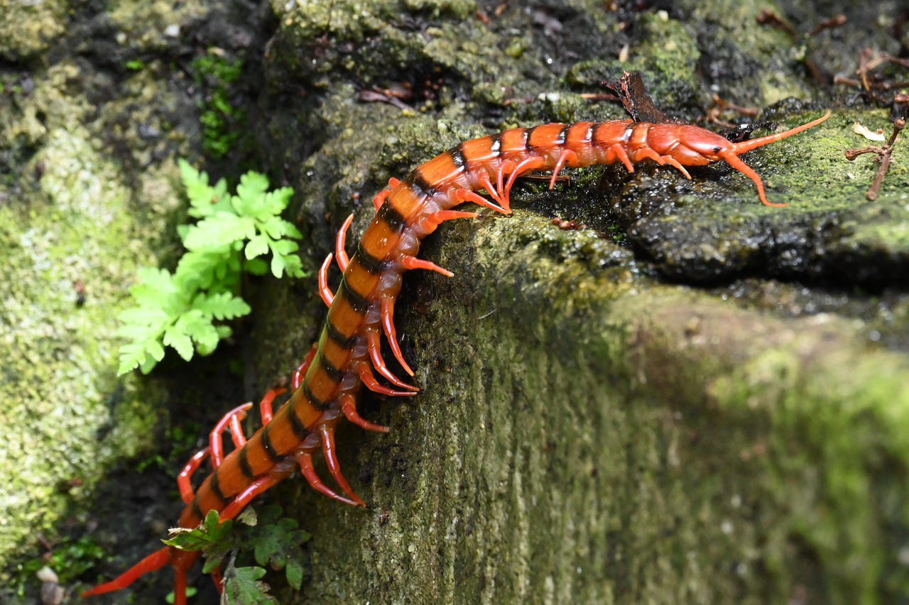

List of myths
- All centipedes have 100 legs.
- When cut in half, they grow into two separate centipedes.
List of facts
- Centipedes have a different numbers of legs depending on the species.
- Giant centipedes can grow over a foot in length.
- Centipedes are not insects, but belong to the class Chilopoda.
Possible Hazard
Some species of centipedes can be hazardous to humans because of their bite. While a bite to an adult human is usually very painful and may cause severe swelling, chills, fever, and weakness, it is unlikely to be fatal. Bites can be dangerous to small children and those with allergies to bee stings. The venomous bite of larger centipedes can induce anaphylactic shock in such people. Smaller centipedes are generally incapable of piercing human skin.
(Hover over image to change)